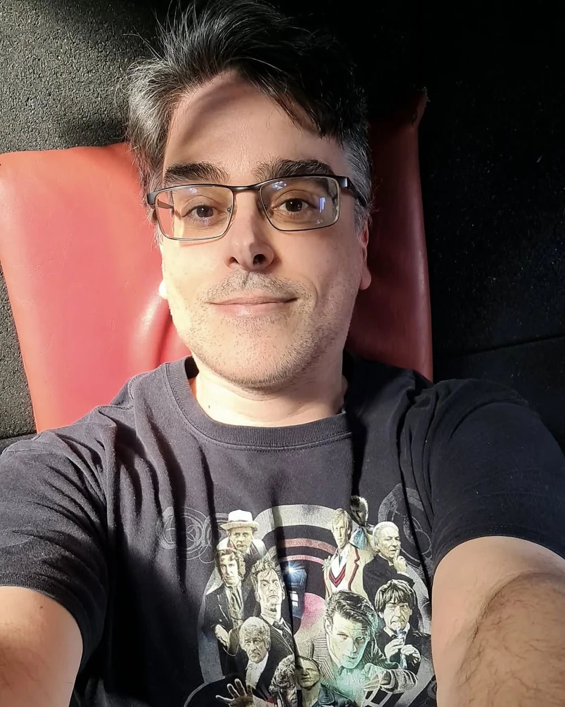
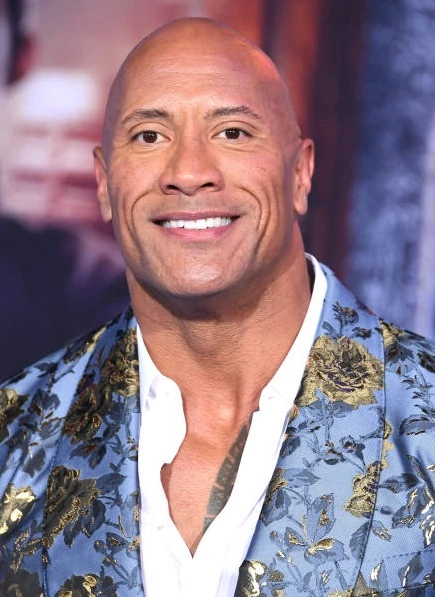
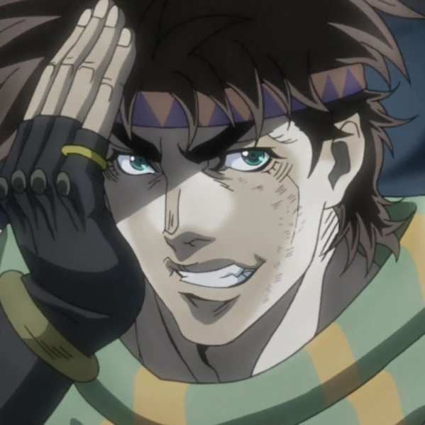
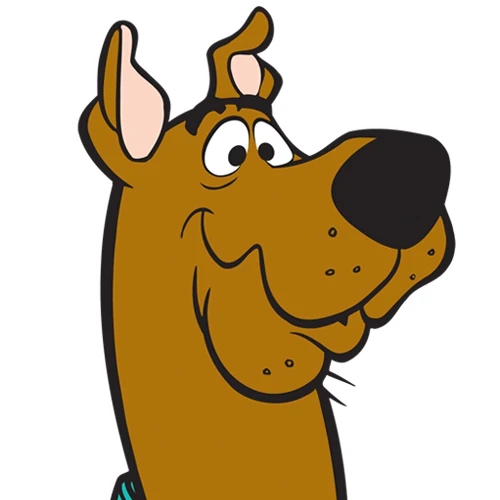
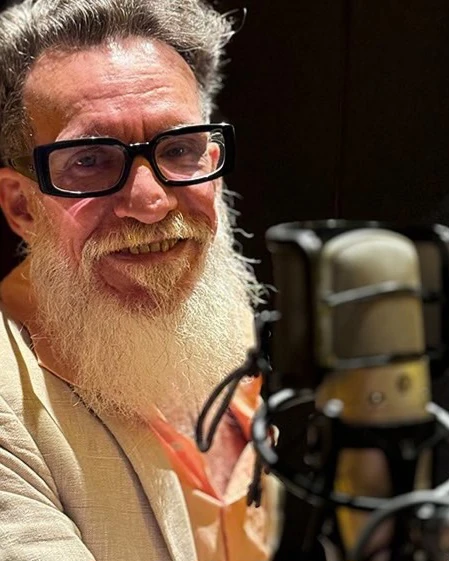
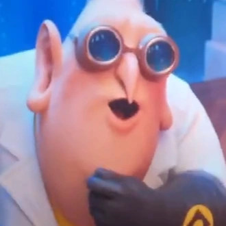
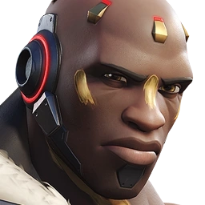
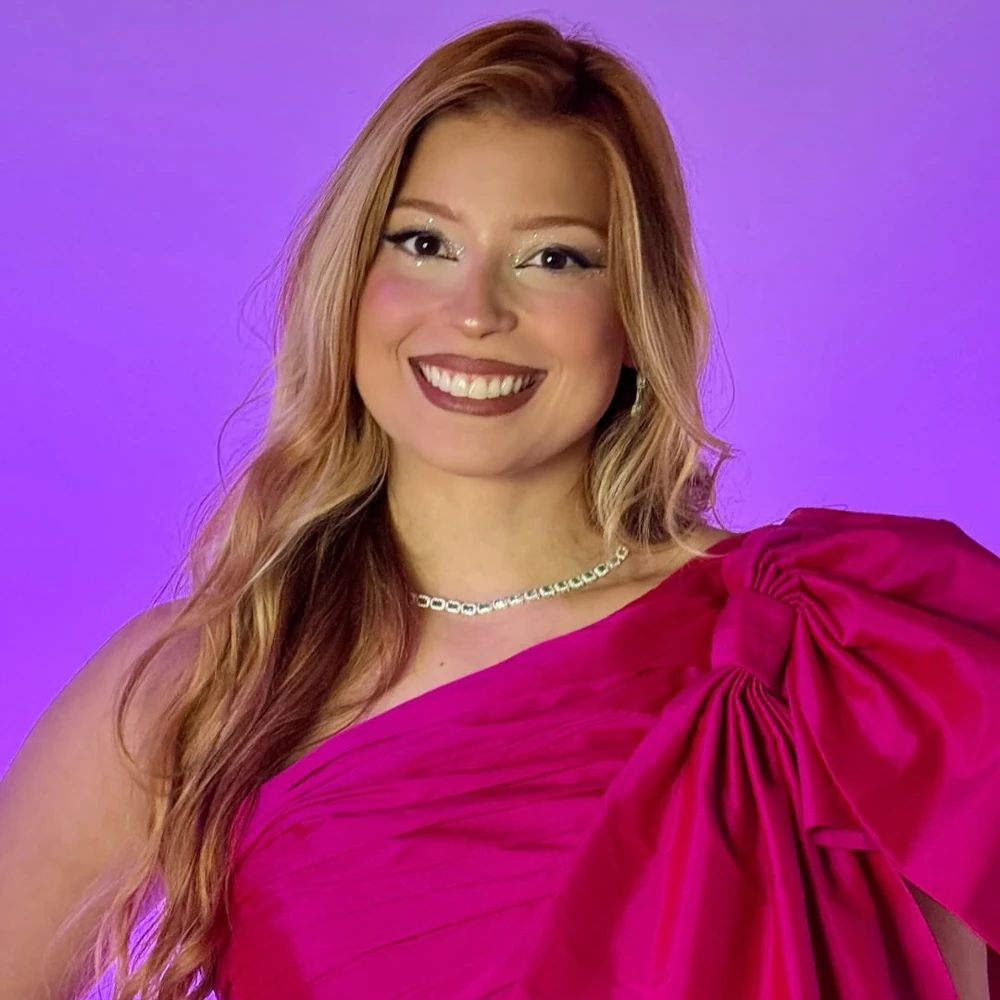
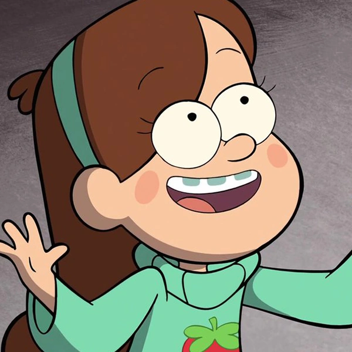
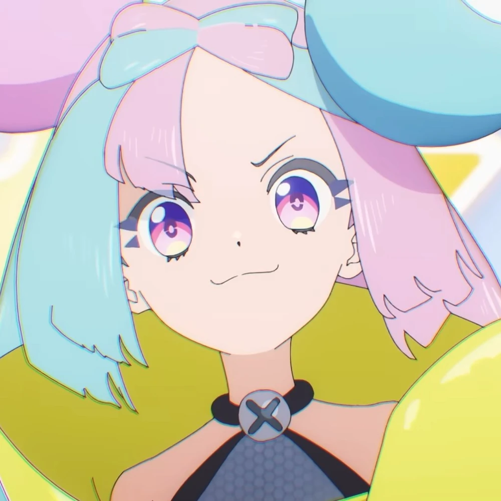

Guilherme Briggs

Guilerme Neves Briggs é inegávelmente uma das maiores vozes do Brasil, ele não é somente dublador, mas também ator, ex-diretor de dublagem, desenhista e locutor.
Dentre suas inúmeras dublages, sçao algumas delas:
Dentre suas inúmeras dublages, sçao algumas delas:
- Dwayne Jhonson, em seus diversos filmes
- Joseph Joestar, em Jojo's Bizzare Adventures
- Scooby Doo, em Scooby Doo



Luis Carlos Persy

Luis Carlos Pereira da Silva, mais conhecido como Luis Carlos Persy, é ator, dublador, diretor de dublagem e diretor teatral brasileiro.
Ele é muito conhecido por seus papéis em filmes, mas não é limitado a eles, alguns de seus papéis são:
Ele é muito conhecido por seus papéis em filmes, mas não é limitado a eles, alguns de seus papéis são:
- Gangplank, em League of Legends
- Doutor Nefário, em Meu Malvado Favorito
- Akande "Doomfist" Ogundimu, em Overwatch 1 e 2


Bianca Alencar

Bianca Silva Alencar é uma figura que por mais que tenha somente 31 anos, já tem 20 anos de dublagem, tendo começado com seus 11 anos de idade, fazendo Pinky, em Pinky Dinky Doo.
Além de dubladora, Bianca também é atriz, diretora de dublagem, cantora, dançarina e criadora de conteúdo
Alguns de seus papéis são:
- Mabel Pines, em Gravity Falls
- Zoe, em League of Legends
- Kissera, em Pokemon - Ventos de Paldea

